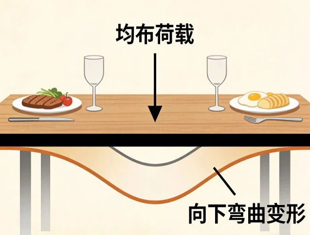
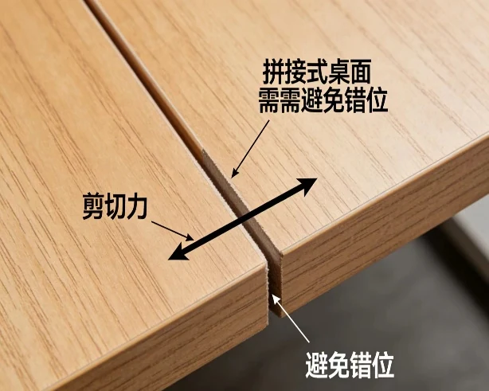
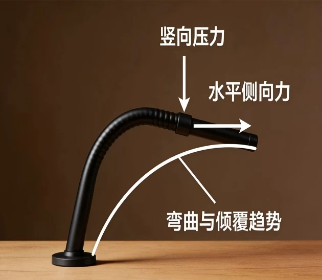
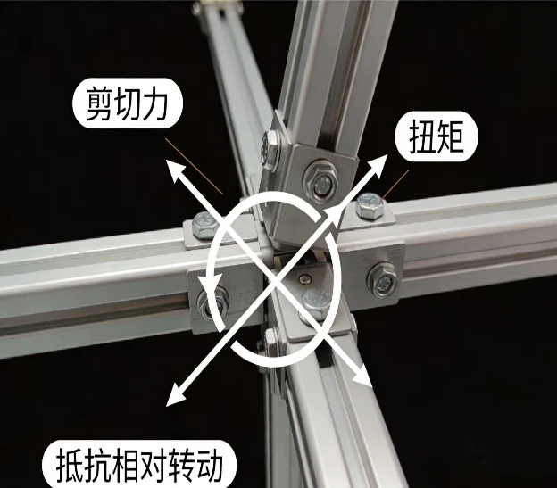
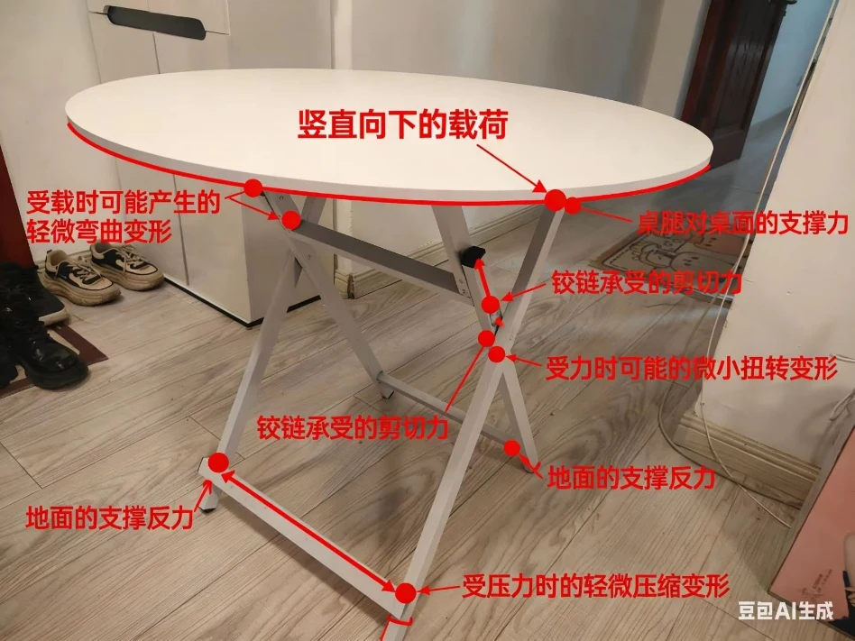

大连交通大学 · 智能建造23
我的原作折叠餐桌的力学设计与结构原理应用
王硕
一、表达力学问题
1、核心力学问题是：展开状态下桌面的抗弯承载、支架的稳定支撑与折叠机构的传力可靠性，意义在于确保放置餐具、食物或临时承重时，桌面不下挠、支架不倾倒，折叠与展开过程顺畅，节点不失效。
2、影响因素包括桌面材质（实木/岩板/人造板）、桌面厚度与拼接方式、支架材质（金属/实木）、支架折叠节点的锁止强度、展开后的跨度与支撑点分布。趋势是向“轻薄化+大跨度+易折叠”发展，通过优化桌面夹层结构和支架受力形式，在减少收纳体积的同时提升承载能力。
3、力学图示为：




桌面受均布荷载（餐具、食物）+ 集中荷载（重物），产生向下弯曲变形；支架受桌面传递的竖向压力，同时受水平侧向力（碰撞、倚靠），产生弯曲与倾覆趋势；折叠节点受剪切力与扭矩，需抵抗相对转动；拼接式桌面的接缝处受剪切力，需避免错位。
二、生活中体现
1、照片及受力/变形标注：

2、配文说明：折叠餐桌是“受弯构件+支撑构件+可动节点”的组合结构，桌面作为核心受弯构件，需分散承载所有上部荷载，拼接式桌面还需保证接缝处的整体性；支架采用可折叠的连杆结构，展开后通过锁止装置固定，形成稳定支撑体系，将荷载传递到地面；折叠节点是力的传递关键，需兼顾“展开锁定”与“折叠灵活”。桌面常采用双层夹板或蜂窝夹层结构，相比单层板材，在减轻自重的同时提升抗弯刚度；支架多为金属管材（圆形/方形空心截面），强度高且轻便，支撑脚末端加装防滑垫，增大与地面摩擦力；折叠节点处的卡扣或螺栓锁止装置，展开后形成“刚性约束”，避免使用时节点松动，类似“结构支座的固定功能”。
三、对照《结构设计原理》内容
1、构件类型对应：桌面属于“受弯构件”，支架连杆属于“轴心受压+受弯复合构件”，折叠节点属于“可动铰接节点（锁定后为刚接）”，支撑脚属于“支座构件”，分别承担弯矩、复合力、剪切扭矩、竖向反力。
2、钢筋配置逻辑迁移：桌面的“夹层/加强筋设计”类似钢筋混凝土受弯构件的“配筋逻辑”——桌面弯曲时，下部产生拉应力，夹层中的横向加强筋或底层夹板相当于“受拉钢筋”，承担拉应力；上层面板相当于“混凝土受压区”，承担压应力，协同提升抗弯承载力；拼接桌面的接缝处加固条，类似“后浇带的受力钢筋”，保证接缝处传力连续，避免局部开裂。
3、设计原理契合：遵循“受弯构件正截面受弯承载力”原则，桌面厚度与夹层结构需满足荷载下的抗弯要求，控制最大变形在允许范围；支架设计遵循“轴心受压构件稳定计算”，通过优化管材截面形状和连杆长度，控制长细比，提升抗倾覆与抗弯曲能力，类似结构设计中“压杆稳定系数”的控制；折叠节点锁止设计遵循“节点承载力不低于构件承载力”原则，确保锁定后节点能有效传递剪力与弯矩，避免节点先于桌面或支架失效；支撑脚防滑垫的设计，类似结构“基础的抗滑移设计”，通过增大摩擦力抵抗水平力，提升整体稳定性。
这是一份便于网页阅读的原作视图，保留提交内容的文字、图片和基本顺序；公开页面不显示学号。